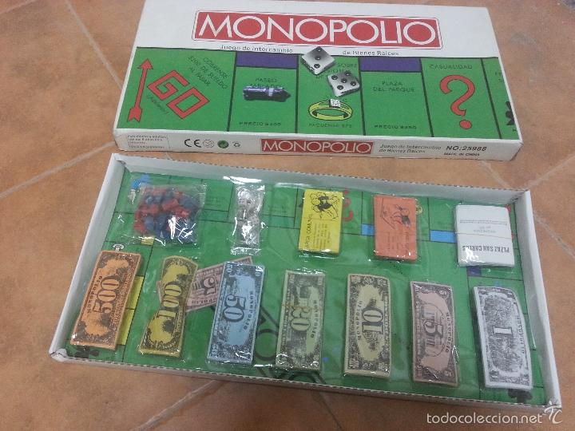
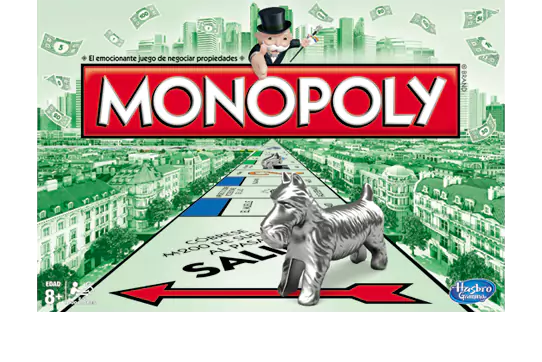

Un juego creado con la función de servir como herramienta para enseñar de la justicia social y económica extraídas del estudio titulado Progreso y Miseria de Henry George.
Comercializado por vez primera en el año de 1936.
A lo largo de 80 años, el juego a sufrido una notable evolución. Sus múltiples ediciones y sus tantas versiones han dado pie a que se cambiara desde la caja que lo contiene hasta los elementos que lo componen. Logrando así, mantenerse como el favorito a través de las décadas
Con los años la finalidad del juego cambió para solo disfrutar un buen rato, negociando propiedades hasta haciendo uso de medios electrónicos para todas las transacciones que requiere el juego.
Con información de Gráfica.info,cultura visual